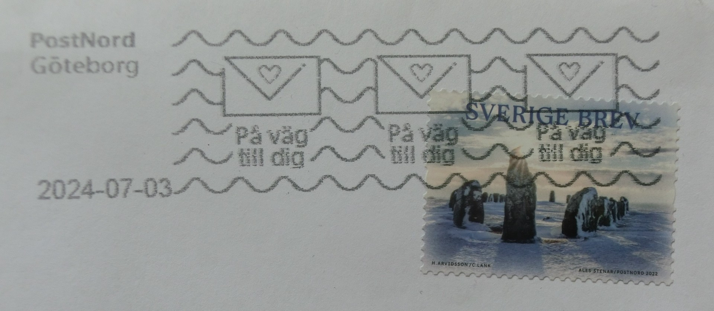
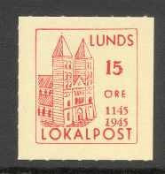
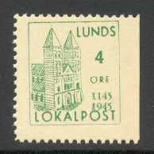
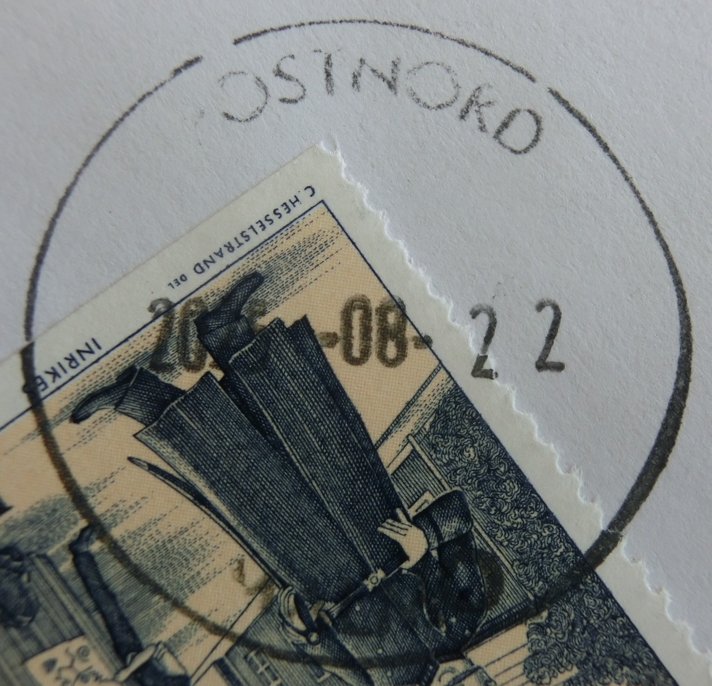
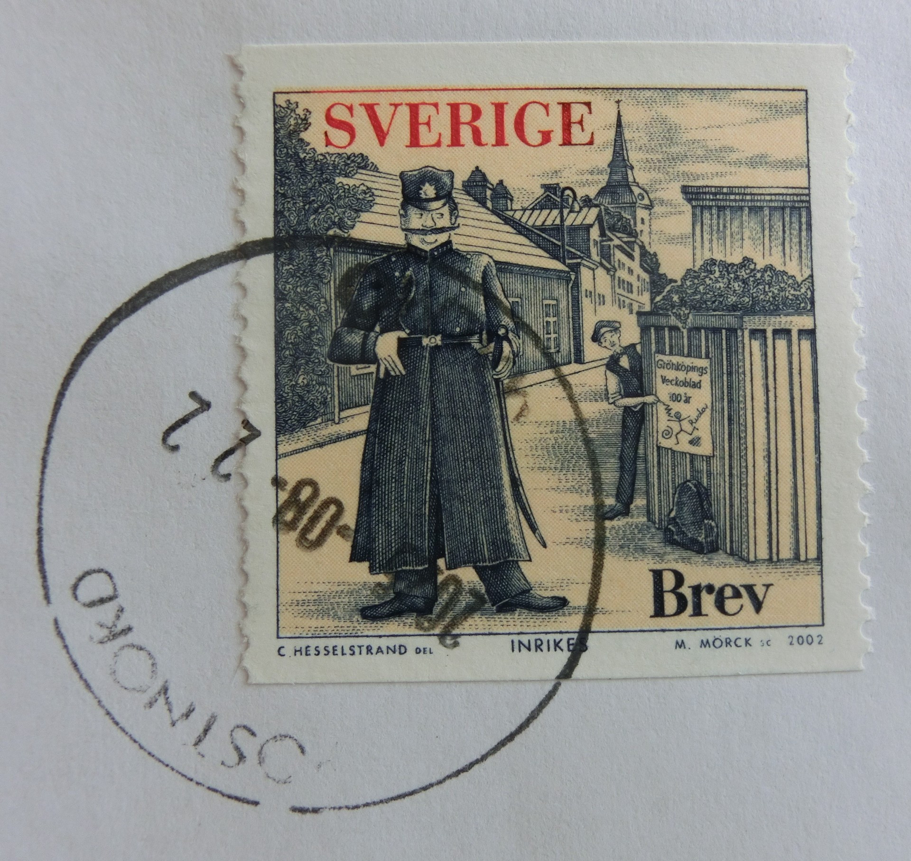

Ales stenar 2022
2024-08-09: Stort tack till SKGS för den vackra försändelsen (utdelad 2024-07-04)!
Möten
Medlemmarna träffas på Träffpunkt Laurentiigatan*, Sankt Laurentiigatan 18 (ingång från Bredgatan) i Lund
nedanstående dagar kl. 18.00 - 20.45:
* 18.00 - 18.45: samling, filatelistisk samvaro och visning av auktionsmaterial
* Föreningsangelägenheter och information
* Kaffepaus
* Föredrag: Sven-Börje Ewers: Franske tidningsförsändelser
* Auktion
* 18.00 - 18.45: samling, filatelistisk samvaro och visning av auktionsmaterial
* Föreningsangelägenheter och information
* Anmälan till höstavslutningen den 2 december!
* Kaffepaus
* Föredrag: Valter Skenhall: Bokbeställningar
* Auktion
* 18.00 - 18.45: samling, filatelistisk samvaro och visning av auktionsmaterial
* Föreningsangelägenheter och information
* Anmälan till höstavslutningen den 1 december!
* Kaffepaus
* Föredrag: Lars Nordberg: Svenska häften
* Auktion
Anmälan! Om ni inte redan har anmält er, klicka här.
* 18.00 - 18.45: samling, filatelistisk samvaro
* Föreningsangelägenheter och information
* Föredrag: Rikard Azelius: Post mellan Tyskland och Sverige
* Liten måltid
* Lotteri
* Frågesport
* Auktion




Auktionerna: Material kan lämnas samma kväll.
Mötesprogrammet: Kontakta styrelsen vid frågor.
Personligt ansvar: Stanna hemma vid sjukdom.